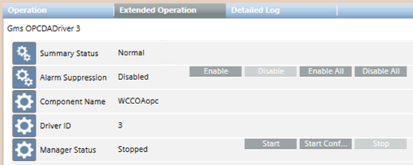

Start the OPC Driver
- The status of a newly created driver is
Stopped. To be able to connect to the field the driver must be started with either Start or Start Conf… - Select Project > Management System > Servers > Main Server > Drivers > [OPC driver].
- In the Extended Operation tab, click Start.
NOTE: Only for configuration purposes, you can also click Start Conf. to activate the driver without establishing any real connection to the field.
